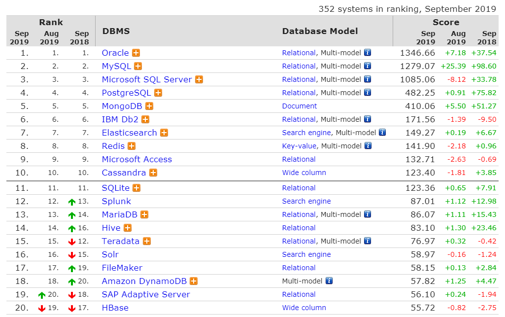
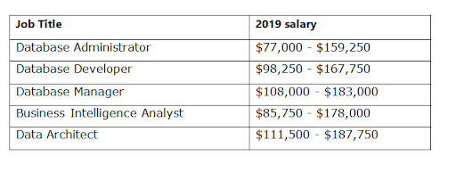
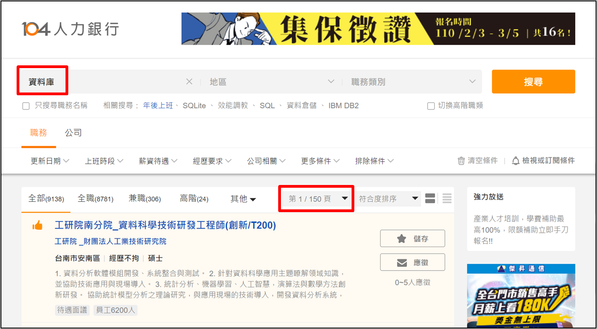

目錄
01 - 初識 MySQL
MySQL 是由 MySQL AB 公司開發、發佈並維護的一個跨平台的、開放原始碼的關聯式資料庫管理系統(DBMS)。
1.1 - 資料庫基礎
資料庫特點：
(1) 實現資料共用，減少資料容錯
(2) 採用特定的資料類型
(3) 具有較高的資料獨立性
(4) 具有統一的資料控制功能
1.2 - 資料庫技術組成
資料庫系統由3個主要部份：
(1) 資料庫(Database；DB)：儲存資料的地方
(2) 資料庫管理系統(Database Management System；DBMS)：管理資料庫的軟體
(3) 應用程式(Application)：加強資料庫系統的處理能力
SQL語言包含4個部份：
(1) 資料定義語言(Data Definition Language；DDL)： Create 、 Alter 、 Drop 等
(2) 資料操作語言(Data Manipulation Language；DML)： Insert 、 Update 、 Delete 等
(3) 資料查詢語言(Data Query Language；DQL)： Select
(4) 資料控制語言(Data Control Language；DCL)： Grant 、 Revoke 、 Commit 、 Rollback 等
資料庫存取介面：
(1) ODBC
(2) JDBC
(3) ADO.NET
(4) PDO
1.3 - 什麼是 MySQL
MySQL的命名機制由 3 個數字和 1 個副檔名組成，例如MySQL-8.0.13版本
(1) 第 1 個數字 (8) 是主版本編號，描述檔案格式
(2) 第 2 個數字 (0) 是發佈等級，主版本編號和發行等級組成發行序號
(3) 第 2 個數字 (13) 是此發佈系列的版本編號，隨每次新發佈版本遞增
資料庫市佔率(點圖可連結)

更多排名請查詢
https://db-engines.com/en/ranking
資料庫薪水(點圖可連結)

資料庫職缺(點圖可連結)


vs.
1.4 - MySQL 工具
1.5 - MySQL 8.0 的新特性簡述
和 MySQL 5.7 相比，MySQL 8.0 的新特性主要包含以下幾個方面。
1. 資料字典
2. 最小資料定義敘述
支援最小資料定義(DDL)敘述。(參考8.5)
3. 安全和帳戶管理
MySQL 8.0 透過以下功能增強資料庫的安全性，並在帳戶管理中實現更高的 DBA 靈活性。
(1) MySQL 資料庫的授權表統一為 InnoDB (交易性)表。(參考3.3)
4. 資源管理
5. InnoDB 增強功能
MySQL 8.0 透過以下增強 InnoDB 的功能。
(1) 將自動增加主鍵的計數器持久化到重做記錄檔中。每次計數器發生改變，都會將其寫入重做記錄檔中。如果資料庫重新啟動，InnoDB
會根據重做記錄檔中的資訊來初始化計數器的記憶體值。(參考4.5)
6. 字元集支援
預設字元集改為utf8mb4。utf8mb4 有幾個新的排序規則，其中包含 utf8mb4_0900_as_cs。(參考4.6)
7. 增強 JSON 功能
8. 資料類型的支援
9. 查詢最佳化
MySQL 8.0 透過以下最佳化查詢的功能。
(1) 開始支援不可見索引。(參考)
(2) 開始支援降冪索引。(參考9.4)
10. 通用表運算式
支援非遞迴和遞迴的通用表運算式(CTE)，其允許使用命名的臨時結果集。(參考7.10)
11. 視窗函數
12. 統計長條圖
MySQL 8.0 實現了統計長條圖。(參考9.5)
13. 備份鎖
MySQL 8.0 Release
Notes
● 2016-09-12：開始研發(8.0.0)
● 2017-09-21：釋出第一個RC版本(8.0.3)
● 2018-04-19：發佈可以正式安裝的版本(8.0.11)
1.6 - 如何學習 MySQL